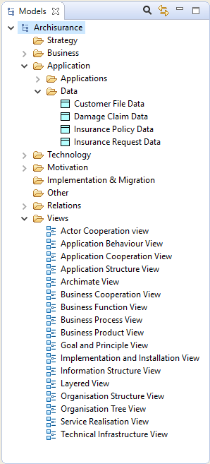

Un modèle ArchiMate comporte un certain nombre d'éléments ArchiMate appartenant à différentes "couches" - la couche "Métier", la couche "Application" et la couche "Technologie". Chaque élément ArchiMate appartient à l'une de ces couches. Par exemple, un "objet métier" appartient à la couche "Métier" et un "composant d'application" appartient à la couche "Application".
Chaque élément du modèle peut être connecté à un ou plusieurs autres éléments via une ou plusieurs relations (connexions) respectant les règles d'ArchiMate.
Expliquer ces éléments et leurs relations dépasse la portée de ce guide. Pour obtenir plus d'informations à ce sujet, voir les Spécifications d'ArchiMate)
Un modèle Archimate est constitué des configurations de ces éléments connectés les uns aux autres via différentes relations. Un modèle ArchiMate est représenté dans Archi dans la fenêtre "Modèles" sous forme d'une structure arborescente organisée en dossiers:
La fenêtre de l'arborescence des modèles avec un modèle d'exemple
Chaque élément ArchiMate et les relations associées sont placées dans le dossier approprié de l'arborescence des modèles.